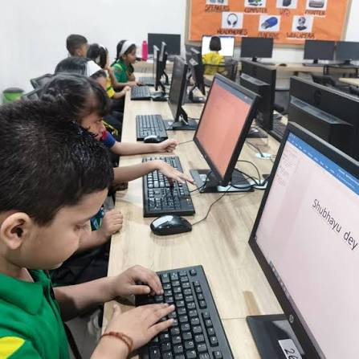

Technology In Action
EDUCATION
Keyboard • Mouse • Webcam • Microphone
BUSINESS
Barcode Scanner • Touchscreen • Card Reader
DAILY LIFE
Touchscreen • Camera • Microphone • Keyboard
Education
Input devices are commonly used in schools and universities. Keyboards, mice, webcams, and microphones allow students to type assignments, attend online classes, search for information, and complete digital activities.
Example: A student uses a keyboard and mouse to complete an online assignment.

Business
Input devices help businesses collect and enter information efficiently. Keyboards, barcode scanners, touchscreens, and card readers are commonly used for data entry, sales transactions, and inventory management.
Example: A cashier uses a barcode scanner to scan products and process a customer's purchase.

Daily Life
Input devices are part of our everyday activities. Touchscreens, cameras, microphones, and keyboards allow people to communicate, search the internet, take photos, and use social media.
Example: A person uses a smartphone touchscreen and microphone to send messages or make video calls.